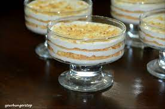

Serradura

Description
This is a quick and easy dessert that is guaranteed to delight everyone!
Ingredients
- One package teatime cookies/biscuits
- 2 cups heavy whipping cream
- one can sweetened condensed milk
- Ground cinnamon
- Toasted sliced almonds
- Toasted coconut
- Passion fruit pulp and seeds
Steps
- Crumble cookies into fine crumbs (but not too fine!)
- In a mixer, beat cream by hand whisk or electrical until medium-soft peaks form
- Add sweetened condensed milk and continue whipping until medium-stiff peaks form, 2 to 4 minutes
- Spoon the cream into a resealable bag and use to pipe into a glass, refrigerate for at least four hours
- Cookies will soften, serve cold and garnish with cinnamon, almonds, coconut and passion fruit just before serving